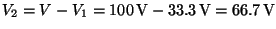

Next: About this document ...
Selected Solutions
for
Chapter 26 (Hwk 5)
of
Fundamentals of Physics, 6/E
by Halliday, Resnick, and Walker
James B. Whitenton
Southern Polytechnic State University
- 3
- Charge flows until the potential difference across the capacitor is the
same as the potential difference across the battery. The charge on the
capacitor is then , and this is the same as the total charge that has
passed through the battery. Thus,
.
- 5
- The capacitance of a parallel-plate capacitor is given by
, where is the area of each plate and is the plate
separation. Since the plates are circular, the plate area is ,
where is the radius of a plate. Thus,
- The charge on the positive plate is given by ,
where
 is the potential difference across the plates. Thus,
.
is the potential difference across the plates. Thus,
.
- 10
- The equivalent capacitance is
- 15
- Let be the separation of the plates in the lower capacitor. Then
the plate separation in the upper capacitor is . The capacitance of the
lower capacitor is
and the capacitance of the upper
capacitor is
 , where is the plate area. Since
the two capacitors are in series, the equivalent capacitance is determined from
, where is the plate area. Since
the two capacitors are in series, the equivalent capacitance is determined from
Thus, the
equivalent capacitance is given by
and is
independent of .
- 20
- In this situation, capacitors 1 and 3 are in series,
which means their charges are necessarily the same:
Also, capacitors 2 and 4 are in series:
- With switch 2 also closed, the potential
difference across must equal the potential difference across and is
Thus,
,
,
, and
.
- 25
- The total energy is the sum of the energies stored in the individual
capacitors. Since they are connected in parallel, the potential difference
across the capacitors is the same and the total energy is
- 30
- The charge in the Figure is
-
,
, and
- We use
, where . The answers are
,
 , and
.
, and
.
- 35
- The capacitance with the dielectric in place is given by
,
where is the capacitance before the dielectric is inserted. The energy stored is
given by
, so
According to Table 26-1, you should use Pyrex.
Next: About this document ...
Jason Pinkney
2003-04-24